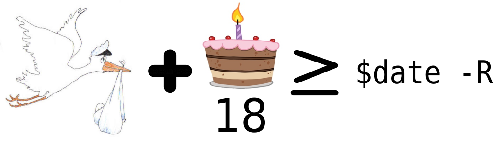

DSL and Recursion Schemes
Marek Kidoň
19.11.2018
Domain
Domain Expert View
We will need to implement a health card check. Come on how hard can it be?
– Domain Expert
Domain Expert View
Hey a customer requires us to check vocational certificates. Come on how hard can it be when you already did those health cards?
– Domain Expert
Domain Expert View
I need …
– Domain Expert
Software Engineer View
Hey man I’m not touching this. I will give you a tool so you can define those yourself…
– Software Engineer
Feature
A distinctive attribute or aspect of something
Feature Predicate
A Feature expression yielding Boolean
Are you an adult?

DSL For Help
DSL
Arithmetics is recursive in its nature
DSL

DSL: Optimizer
Stick to the math
The (Int, + ) (Int, = ) (Bool, = ) algebras should be optimized
DSL: Variable Substitution
Variables: the mistery tour
DSL: Evaluation

Limits of this model
Inherent recursive nature of a data type always has limits
- It does not compose well
- optimize is way too clomplex
- eval traverses expression twice
Recursion schemes
Fixed Point
Be it a function or a data type
or a data type
Abstract Over Recursion
Reveal the true primitives
Abstract Over Recursion
Fix In Action

Evaluation for Free
extract a single value from an expression
Unpack Traverse Apply
Evaluation for Free: Algebra
Algebra (F-Algebra) consists of:
- An (Endo-)Functor F
- Its carrier type A
- A Morphism F[A] to A
Evaluation for Free: Algebra
There can be many algebras
Evaluation for Free: Initial Algebra
One kind of Algebra to rule them all
It is at least as powerful as all other Algebras
Evaluation for Free: Initial Algebra
The property to die for
DSL for Help: Revisited
DSL - Revisited: Optimizer
Composition for the win
DSL - Revisited: Substitution
No more unnecessary recursion
DSL - Revisited: Evaluation
Everything and nothing has changed
DSL - Revisited: Evaluation

How About Typechecker
Bad news
Is not total nor can be expressed by means of cata
Good news
There is an InitialMAlgebra and there is entire ZOO of morphisms
Conclusion
Toolbox
Generalized Recursion Schemes libraries
Resources
Adventures in Uncertainty (Blog)
Functional Programming with Bananas, Lenses, Envelopes and Barbed Wire